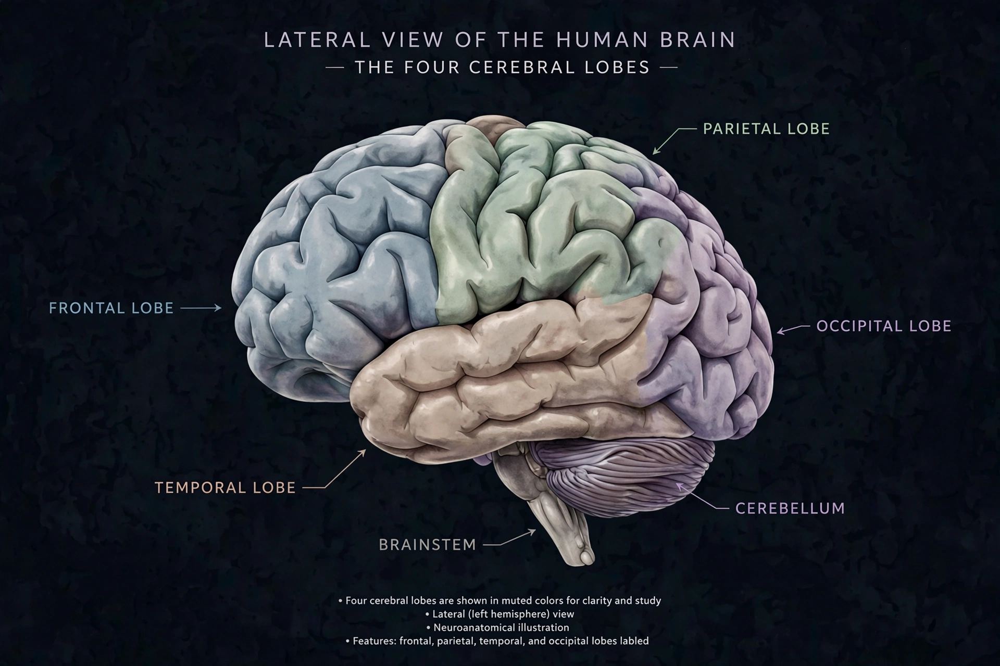

Brain
From Wikipedia, the free encyclopedia
| Brain | |
|---|---|
 | |
| System | Central nervous system |
| Main divisions | Cerebrum, cerebellum, brainstem |
| Neurons (human) | ~86 billion |
| Mass (adult human) | ~1.3–1.4 kg |
| Supply | Internal carotid and vertebral arteries |
The brain is an organ that serves as the centre of the nervous system in all vertebrate and most invertebrate animals. It consists of a large mass of nervous tissue protected within the skull, and coordinates sensation, movement, cognition, emotion and homeostasis. In humans the brain contains roughly 86 billion neurons connected by trillions of synapses.
Anatomy
The largest part of the human brain is the cerebrum, divided into two hemispheres joined by the corpus callosum. Its folded outer layer, the cerebral cortex, is responsible for higher functions including perception, language, memory and conscious thought, and is organised into frontal, parietal, temporal and occipital lobes. Beneath it lie subcortical structures including the thalamus, hypothalamus, hippocampus and basal ganglia. The cerebellum, at the back of the head, fine-tunes movement and balance and contains more neurons than the rest of the brain combined. The brainstem — midbrain, pons and medulla oblongata — controls autonomic functions such as breathing and heart rate and connects the brain to the spinal cord.
Function and physiology
Neurons communicate electrochemically: signals travel as action potentials along axons and cross synapses via neurotransmitters such as glutamate, GABA, dopamine and serotonin. The brain consumes about 20% of resting energy expenditure despite being ~2% of body mass, fuelled almost entirely by glucose from the blood. A protective blood–brain barrier, formed by tight junctions in capillary endothelium, regulates what reaches neural tissue. Cerebrospinal fluid cushions the brain within the meninges.
Development and disorders
The brain develops from the embryonic neural tube; neurogenesis, migration and synaptic pruning shape circuits through childhood and adolescence. Disorders of the brain include stroke, tumours such as those discussed under cancer, epilepsy, neurodegenerative diseases (Alzheimer's, Parkinson's), infections and psychiatric illnesses. The scientific study of the brain is neuroscience; see also developmental biology.